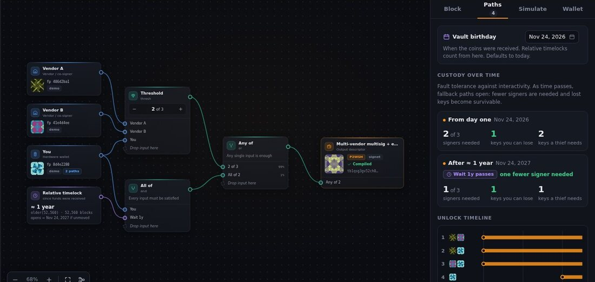
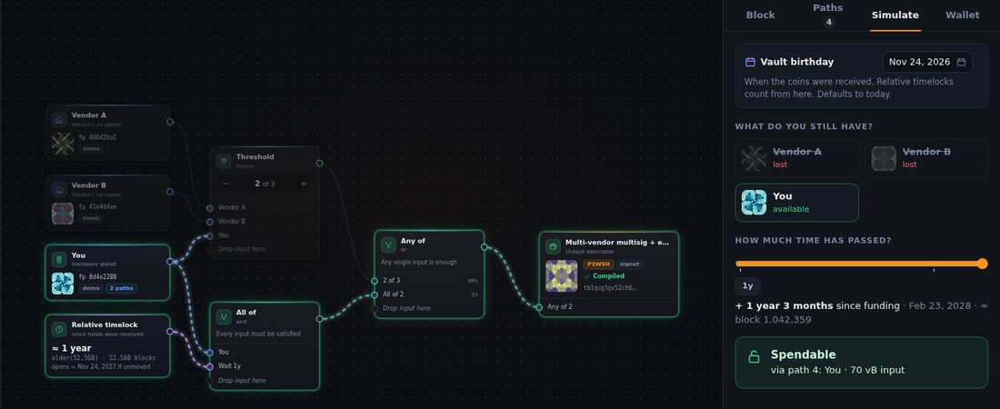

Miniscript Studio · portlandhodl
Design Bitcoin self-custody visually
Drag keys, timelocks and logic blocks onto a canvas and watch them compile live into Miniscript, descriptors and addresses. Everything runs in your browser on rust-miniscript compiled to WebAssembly.
github.com/portlandhodl/miniscript-studio · live demo · rust-miniscript 13.2 + bc-lifehash 0.1, one self-contained HTML file, no server
Running example
Multi-vendor multisig + escape hatch

Day to day, 2 of 3 between you and two custody vendors. If the vendors disappear, your own key alone recovers the funds after a year. One of the built-in templates, loaded with demo keys.
Under the hood
Blocks → policy → miniscript → descriptor
138-byte script, max witness 286 WU; the Analysis tab reports it safe, non-malleable and sane, with no timelock mixing. Taproot mode compiles to tr() with a NUMS internal key when no single key can take the key path.
Key reuse done right
One device, two paths, two derivation branches
- Miniscript rejects repeated keys, so one key block wired into a second path gets its own branch:
<2;3>/*, then<4;5>/*, and so on. - Same signer, same xpub, different child keys. The BIP-388 export keeps it as one key,
@2, that the hardware wallet registers once.
Custody over time
Trading interactivity for fault tolerance
Paths 1–3, now
Any 2 of Vendor A, Vendor B, You. 79 vB per input, from rust-miniscript's spend planner.
Path 4, after a year
You alone, 70 vB per input. The same key that makes recovery possible also lowers the bar for a thief.
Disaster simulator
Both vendors vanish. Are the coins gone?

- Mark Vendor A and Vendor B lost: "Locked, but recoverable. Opens in ≈ 1 year with You."
- Scrub time past the timelock: "Spendable via path 4: You · 70 vB input", and the satisfied blocks light up on the canvas.
Safety and caveats
Public keys only, and verify on your signer
Private keys refused
Pasted xprvs, WIF keys and seed words are detected, cleared and never stored, with a warning to treat them as exposed.
Demo keys are public
Demo mode derives keys from public seeds and shows a banner the whole time. Never fund a wallet built on them.
Relative timelocks reset
older() counts from when each coin confirmed, up to 65,535 blocks (≈ 455 days). Spending through the 2-of-3 path restarts the clock.
Check before funding
Confirm the descriptor and addresses on your signing devices. Share links put the whole design in the URL fragment; no server sees it.
Discussion
Questions for the room
- After a year, a thief needs only your key. How long should an escape hatch be, and should vaults roll coins to keep it shut?
- Would you trust a policy compiler's 99@/1@ weighting, or hand-write the miniscript?
- Is a visual designer good for self-custody, or does it make complex policies too easy to build badly?
- Which hardware wallets actually register BIP-388 policies with reused keys like
@2/<2;3>/*? - What's missing: the Taproot templates, the hashlock (HTLC) one, or importing your existing wallet's descriptor?